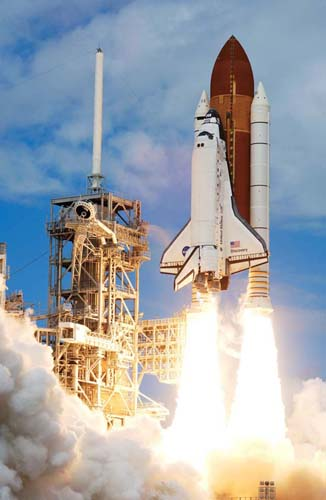
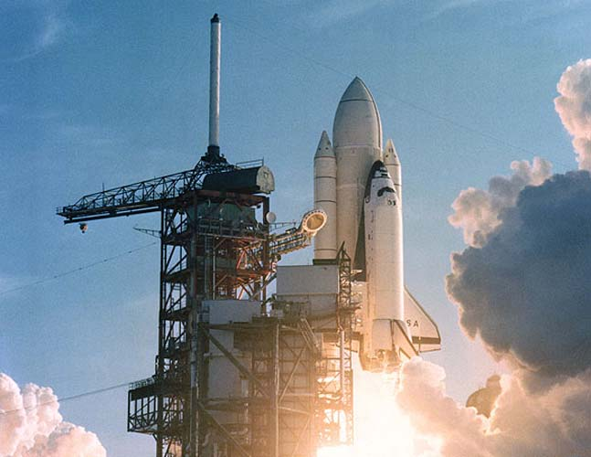

Колумбия
«Колу́мбия» OV-102 (англ. Columbia) — многоразовый транспортный космический корабль системы «Спейс Шаттл», изготовленный компанией Rockwell International и эксплуатировавшийся НАСА. Названная в честь первого американского корабля, совершившего кругосветное путешествие с проходом вдоль верхней части североамериканского побережья Тихого океана, и женского олицетворения Соединённых Штатов, «Колумбия» стала первым из пяти орбитальных кораблей системы «Спейс Шаттл», совершивших полёт в космос, и совершила свой первый космический полёт в апреле 1981 года. Будучи лишь вторым полномасштабным орбитальным кораблём, изготовленным после испытательного корабля «Энтерпрайз», «Колумбия» сохранила уникальные черты экспериментальной конструкции по сравнению с более поздними орбитальными кораблями, такие как контрольно-измерительные приборы. В дополнение к более тяжёлому фюзеляжу и использованию внутреннего шлюза на протяжении всего срока службы, это сделало «Колумбию» самым тяжёлым из пяти космических орбитальных кораблей системы «Спейс Шаттл». «Колумбия» примерно на 1000 килограмм тяжелее «Челленджера» и на 3600 килограмм тяжелее «Индевора». «Колумбия» во время первых шести полётов также оснащалась катапультируемыми креслами на базе кресел от SR-71, а с 1986 года на её вертикальном стабилизаторе располагался отсек для внешних научных приборов.
За 22 года эксплуатации «Колумбия» совершила 28 полётов в рамках программы «Спейс Шаттл», проведя в космосе более 300 дней и совершив более 4000 витков вокруг Земли. Хотя её более высокая масса и внутренний шлюз делали её непригодной для запланированных запусков по программе «Шаттл-Кентавр» и стыковок с космическими станциями, тем не менее, она оказалась полезной в качестве рабочей лошадки для научных исследований на орбите после гибели «Челленджера» в 1986 году. «Колумбия» использовалась для одиннадцати из пятнадцати полётов лабораторий «Спейслэб», всех четырёх полётов по исследованию микрогравитации и единственного полёта исследовательского двухместного модуля «Спейсхэб». В ходе тринадцати полётов орбитального корабля использовался комплект Extended Duration Orbiter, что способствовало длительному пребыванию на орбите для научных и технологических исследовательских миссий. «Колумбия» также использовалась для возвращения Long Duration Exposure Facility и развёртывания телескопа «Чандра», а также доставила в космос первую женщину-командира американского космического полёта, первого астронавта ЕКА, первую женщину-астронавта индийского происхождения и первого израильского астронавта.
В конце своего последнего полёта в феврале 2003 года «Колумбия» разрушилась при входе в атмосферу, в результате чего погиб весь экипаж миссии STS-107 в составе семи человек и была уничтожена большая часть находившейся на борту научной полезной нагрузки. Собранная вскоре после этого Комиссия по расследованию катастрофы «Колумбии» пришла к выводу, что повреждения, полученные левым крылом орбитального корабля во время запуска миссии STS-107, нанесли роковой удар по системе тепловой защиты корабля. Гибель «Колумбии» и её экипажа привела к переориентации программ НАСА по пилотируемым полётам, что привело к созданию программы «Созвездие» в 2005 году и окончательному прекращению программы «Спейс Шаттл» в 2011 году. В честь экипажа после катастрофы были созданы многочисленные мемориалы и памятники; был открыт Мемориальный космический центр «Колумбия». Исследованные марсоходом «Спирит» холмы Колумбия в кратере Гусев на Марсе были названы в честь экипажа. Большинство найденных останков «Колумбии» хранятся в здании вертикальной сборки космического центра Кеннеди, хотя некоторые части выставлены на всеобщее обозрение в близлежащем комплексе для посетителей.
За 22 года эксплуатации «Колумбия» совершила 28 полётов в рамках программы «Спейс Шаттл», проведя в космосе более 300 дней и совершив более 4000 витков вокруг Земли. Хотя её более высокая масса и внутренний шлюз делали её непригодной для запланированных запусков по программе «Шаттл-Кентавр» и стыковок с космическими станциями, тем не менее, она оказалась полезной в качестве рабочей лошадки для научных исследований на орбите после гибели «Челленджера» в 1986 году. «Колумбия» использовалась для одиннадцати из пятнадцати полётов лабораторий «Спейслэб», всех четырёх полётов по исследованию микрогравитации и единственного полёта исследовательского двухместного модуля «Спейсхэб». В ходе тринадцати полётов орбитального корабля использовался комплект Extended Duration Orbiter, что способствовало длительному пребыванию на орбите для научных и технологических исследовательских миссий. «Колумбия» также использовалась для возвращения Long Duration Exposure Facility и развёртывания телескопа «Чандра», а также доставила в космос первую женщину-командира американского космического полёта, первого астронавта ЕКА, первую женщину-астронавта индийского происхождения и первого израильского астронавта.
В конце своего последнего полёта в феврале 2003 года «Колумбия» разрушилась при входе в атмосферу, в результате чего погиб весь экипаж миссии STS-107 в составе семи человек и была уничтожена большая часть находившейся на борту научной полезной нагрузки. Собранная вскоре после этого Комиссия по расследованию катастрофы «Колумбии» пришла к выводу, что повреждения, полученные левым крылом орбитального корабля во время запуска миссии STS-107, нанесли роковой удар по системе тепловой защиты корабля. Гибель «Колумбии» и её экипажа привела к переориентации программ НАСА по пилотируемым полётам, что привело к созданию программы «Созвездие» в 2005 году и окончательному прекращению программы «Спейс Шаттл» в 2011 году. В честь экипажа после катастрофы были созданы многочисленные мемориалы и памятники; был открыт Мемориальный космический центр «Колумбия». Исследованные марсоходом «Спирит» холмы Колумбия в кратере Гусев на Марсе были названы в честь экипажа. Большинство найденных останков «Колумбии» хранятся в здании вертикальной сборки космического центра Кеннеди, хотя некоторые части выставлены на всеобщее обозрение в близлежащем комплексе для посетителей.